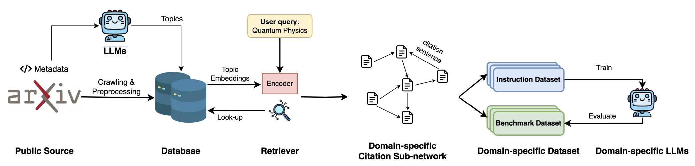
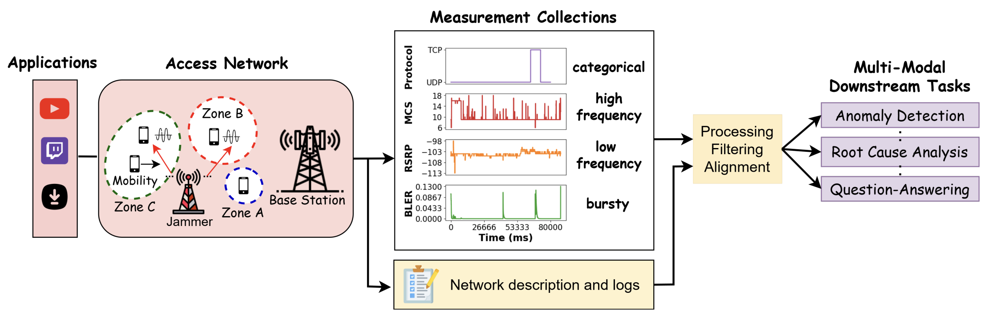
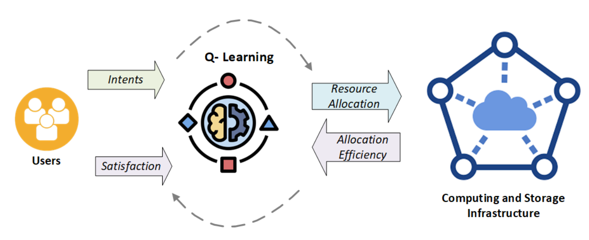

Selected Work
Publications

LitBench: A Graph-Centric Large Language Model Benchmarking Tool For Literature Tasks
A. Varvarigos, A. Maatouk, J. Zhang, N. Bui, J. Chen, L. Tassiulas, R. Ying
Proceedings of the 32nd ACM SIGKDD Conference on Knowledge Discovery and Data Mining, 2026, Jeju, South Korea
View paper

TelecomTS: Observability Dataset for Multi-Modal Time-Series and Language Analysis
A. Feng, A. Varvarigos, I. Panitsas, D. Fernandez, Y. Guo, J. Wei, J. Chen, A. Maatouk, L. Tassiulas, R. Ying
Submitted to ICML 2026
View paper

Intent-based Allocation of Cloud Computing Resources Using Q-Learning
P. Kokkinos, A. Varvarigos, D. Konidaris, K. Tserpes
International Symposium on Algorithmic Aspects of Cloud Computing, Netherlands, 184-196, September 2023
View paper